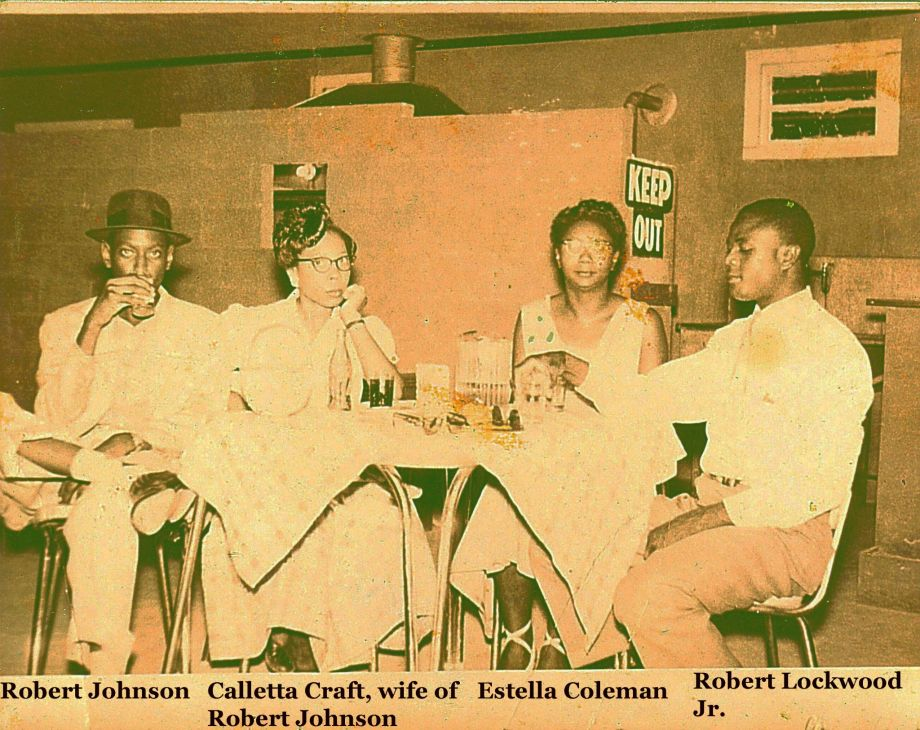
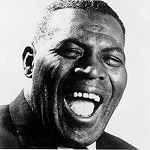

New photo of bluesman Robert Johnson unearthed.

A newly-analyzed photo purportedly shows Robert Johnson, the mysterious blues legend whose meager recordings became a groundwork for American popular music. Only two such photos have been unequivocally confirmed, and the prospect of another is held as a holy grail in blues society. Read more...
Howlin' Wolf Biography

Howlin' Wolf was born on June 10, 1910 in White Station, Mississippi, near West Point. He was named Chester Arthur Burnett, after Chester A. Arthur, the 21st President of the United States. His physique garnered him the nicknames of Big Foot Chester and Bull Cow as a young man: he was 6 feet 3 inches (191 cm) tall and Read more...